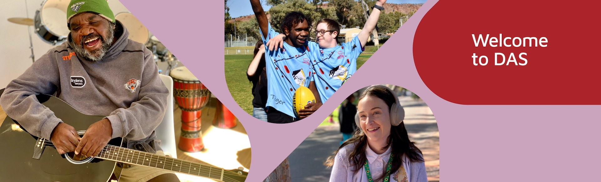
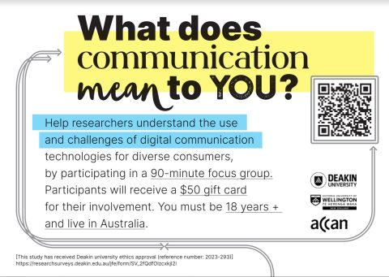
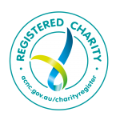

Welcome to DAS
Advocacy alongside individuals and families living with disability.
Disability Advocacy Service Inc. (DAS) offers a free, confidential advocacy service to individuals and families with a disability, supporting and empowering clients to exercise their own rights in accordance with the Disability Advocacy Standards.
Our advocacy services are available to people with a disability in Alice Springs, Amoonguna, Tennant Creek and surrounding areas in Central Australia.
Who we are
Free, independent and confidential — for people across Central Australia.
We are committed to social justice and equality for people with disability and their families. Our advocacy is inclusive, person-centred, and empowers clients to participate in decisions affecting them.
We work with individuals and families to make sure decisions made about their lives are fair, informed, and on their terms — our role is to listen, to stand alongside, and to make sure your voice is heard in the rooms where it matters.
What we do
Five ways we walk beside you.
Advocacy that puts the person first — across NDIS, membership, events, the Royal Commission, and the giving that keeps us free for the community.
Advocacy & NDIS Appeals
We support people with a disability to build the knowledge and skills to advocate for themselves — including navigating the NDIS and appealing decisions.
Learn moreMembership
Membership is free and subject to acceptance. Join a community of people advocating for their rights.
Apply for membershipEvents
Our events calendar will keep you up to date on what's happening. Don't miss out!
See the calendarDisability Royal Commission
The Disability Royal Commission has handed down its final report and recommendations to the Australian Government. We will keep you up to date here.
Read updatesDonations
DAS supports people with a disability to ensure their rights are protected and promoted. Visit our Donations page on Give Now.
Donate on Give NowNews
The latest from DAS.

Deakin University Focus Group
We joined a Deakin University research focus group exploring disability advocacy and service provision in regional Australia.
Read moreHarnessing Your Unique Strengths
Entrepreneurial tips for neurodivergent individuals — building on strengths and creating supportive environments.
Read moreRoyal Commission Final Report Released
The Disability Royal Commission has handed down its final report with 222 recommendations for change.
Read moreEvents
Upcoming events
There are no upcoming events at this time.
Check back here, or follow us on Facebook to be the first to know when something is on.
DAS runs information sessions, peer-support meet-ups and community gatherings throughout the year — open to people with a disability, families, and supporters across Central Australia.
View the calendar
Registered with the Australian Charities and Not-for-profits Commission.